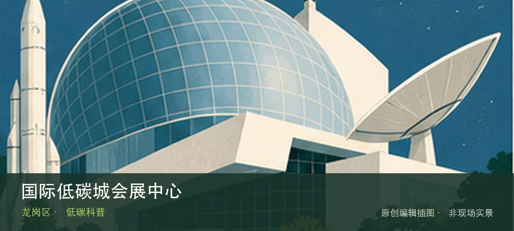

适合谁
适合亲子、学生和希望理解城市技术系统的人；预约型场馆不适合未经确认直接到场。

SHENZHEN GUIDE · 180
坪地 · 低碳科普
国际低碳城会展中心位于坪地低碳城，绿色建筑、低碳技术与会展活动构成产业展示窗口，非展会日的公众开放内容与活动日差异很大。先辨认低碳建筑技术，再观察绿色产业展览，两者共同说明这里为何不能被同类地点的泛化标签替代。参观重点是通过低碳建筑技术与绿色产业展览理解技术如何进入城市日常，而不是只收集装置照片。预约、活动场次和可参与项目会改变体验，出发前要同时核对开放日与入场条件。
WHY GO
适合亲子、学生和希望理解城市技术系统的人；预约型场馆不适合未经确认直接到场。
首次游览国际低碳城会展中心不求走全，先完成低碳建筑技术这一项观察，再根据同行者体力选择绿色产业展览，并保留原路退出方案。
公共交通先到坪地低碳城片区，再以国际低碳城会展中心公开参观入口为终点；校园、园区或预约型场馆须同时核对门禁与开放日。
自驾优先使用国际低碳城会展中心所属建筑、园区或邻近正规公共停车场；预约时一并确认车牌登记、门岗和社会车辆准入规则。
全年可安排，高温或降雨日适合作为室内主行程；户外实验、天文和基地活动仍严格受天气影响。
NEARBY IDEAS